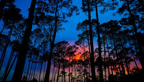

seasons of the year
"Each of the four divisions of the year (spring, summer, autumn, and winter) marked by particular weather patterns and daylight hours, resulting from the earth's changing position with regard to the sun." as described by the Oxford dictionary. The seasons are what determine a lot for people and our planet. I also know that for a lot of people, the seasons determine a lot of peoples mood.